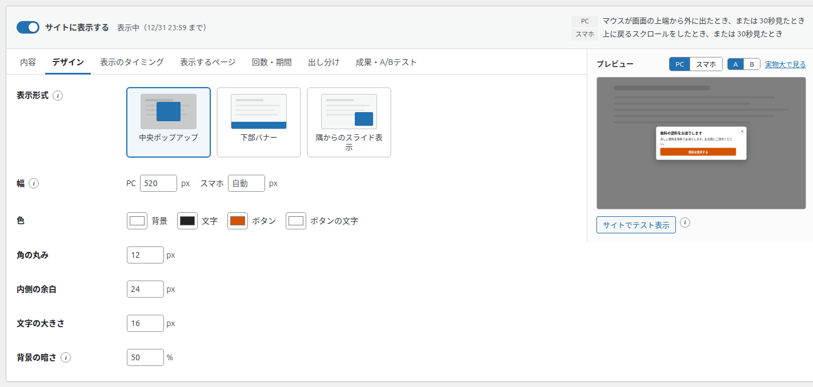
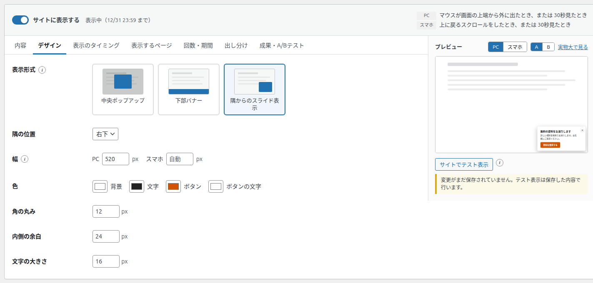
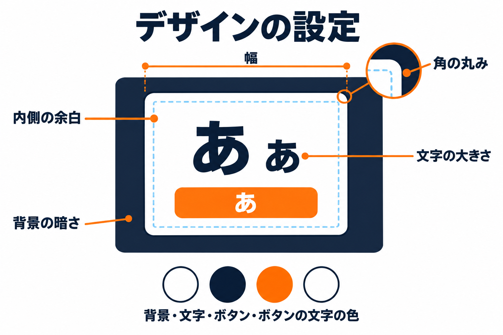

デザインタブ
バナーの出方（表示形式）と、幅・色・角の丸み・余白・文字の大きさ・背景の暗さを決めるタブです。

項目の一覧
| 項目 | 入力できる範囲 | 初期値 | 表示される条件 |
|---|---|---|---|
| 表示形式 | 中央ポップアップ / 下部バナー / 隅からのスライド表示 | 中央ポップアップ | 常に |
| 隅の位置 | 右下 / 左下 / 右上 / 左上 | 右下 | 表示形式が「隅からのスライド表示」のとき |
| 幅（PC） | 200〜1200 px | 520 px | 表示形式が「下部バナー」以外のとき |
| 幅（スマホ） | 0〜1200 px（空欄で自動） | 自動 | 表示形式が「下部バナー」以外のとき |
| 色 | 背景・文字・ボタン・ボタンの文字 | 白・濃い灰色・青・白 | 常に |
| 角の丸み | 0〜60 px | 12 px | 常に |
| 内側の余白 | 0〜80 px | 24 px | 常に |
| 文字の大きさ | 10〜32 px | 16 px | 常に |
| 背景の暗さ | 0〜100 %（5 % きざみ） | 50 % | 表示形式が「中央ポップアップ」のとき |
表示形式
バナーをどの形で出すかを、絵の付いたカードから選びます。訪問者から見た違いはサイトでの表示で詳しく説明します。
| 表示形式 | 出方 | 向いている使い方 |
|---|---|---|
| 中央ポップアップ | 画面を暗くして、中央にバナーを出します。閉じるまで、ページの操作はできません。 | どうしても見てほしい案内（期間限定のクーポンなど） |
| 下部バナー | 画面のいちばん下に横長の帯で出します。ページを読みながら閉じられます。 | じゃまにしたくない案内（LINE 登録・メールマガジンなど） |
| 隅からのスライド表示 | 画面の隅に小さなカードが滑り込みます。ページを読みながら閉じられます。 | 関連記事・問い合わせの案内など |
隅の位置
表示形式で「隅からのスライド表示」を選んだときだけ表示されます。右下・左下・右上・左上から選びます。

幅
- バナーの最大の幅です。画面のほうが狭いときは、画面に合わせて縮みます。
- スマホの欄を空にすると、画面の幅に合わせます。スマホだけ細くしたいときに数字を入れます。
- 隅からのスライド表示は、大きな数字を入れても最大 380 pxです。
- 下部バナーは画面の横幅いっぱいに表示するため、この項目は表示されません。
色
4つの色見本を押すと、色を選ぶ画面が開きます。
| 色 | 変わる場所 | 初期値 |
|---|---|---|
| 背景 | バナーの地の色 | 白 |
| 文字 | 見出し・説明文・サブリンクの文字の色 | 濃い灰色 |
| ボタン | ボタンの地の色 | 青 |
| ボタンの文字 | ボタンの文字の色 | 白 |
背景と文字、ボタンとボタンの文字は、はっきり見分けられる色の組み合わせにしてください。薄い色どうしは読みにくくなります。
角の丸み・内側の余白・文字の大きさ

- 角の丸み: バナーの四隅の丸さです。0 で四角になります。下部バナーでは角は丸くなりません。
- 内側の余白: バナーの縁から中身までのすき間です。
- 文字の大きさ: 説明文などの基準の大きさです。見出しはこれより一回り大きく表示されます。
背景の暗さ
中央ポップアップのとき、バナーの後ろのページをどれくらい暗くするかです。0 % で暗くしません。100 % で真っ黒になります。
ここで変えた見た目は、右のプレビューにすぐ反映されます。実際の大きさで確かめたいときは、プレビューの「実物大で見る」を押します。